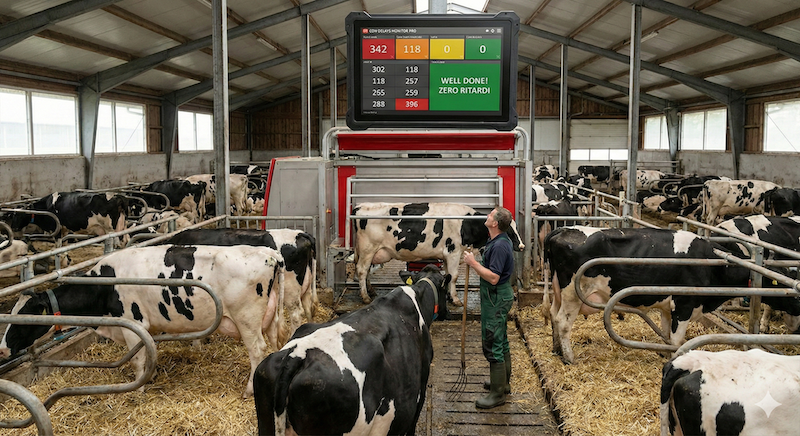

Basta consultare smartphone o tablet tra la mandria. Trasforma ogni schermo in un monitor industriale fisso collegato direttamente ai tuoi robot Astronaut®.
Codici colore istantanei (Verde, Ambra, Rosso) per identificare l'urgenza del recupero vacche senza errori.
Confronto immediato tra Resa Prevista e Produzione Effettiva per individuare cali metabolici precoci.
Nessuna configurazione IP. L'estensione scansiona automaticamente la tua rete locale e trova il robot.
Una semplice estensione Chrome al costo di un caffè al mese. Installabile su ogni PC o Mini PC.
Installa un monitor industriale e un microPC fanless dietro di esso. Questa combinazione garantisce stabilità 24/7 in ambiente stalla.
Posiziona il monitor a 160-180cm da terra, al riparo da acqua e vibrazioni eccessive.
Il microPC DEVE essere collegato alla STESSA RETE locale (LAN/WiFi) del computer dove gira Lely T4C o Horizon. Senza questo, i dati non verranno rilevati.
Consigliamo vivamente l'uso di un cavo Ethernet per evitare interferenze tipiche del WiFi in stalla.
Una volta avviato Windows, segui questi passaggi dettagliati:
Per rendere il sistema autonomo in caso di blackout o riavvii:
Premi Win+R, scrivi netplwiz e togli la spunta a "Gli utenti devono immettere nome e password". Inserisci la tua password e conferma.
Premi Win+R, scrivi shell:startup. Crea un collegamento a Chrome e aggiungi questo parametro alla fine del percorso:
"C:\...\chrome.exe" --kiosk